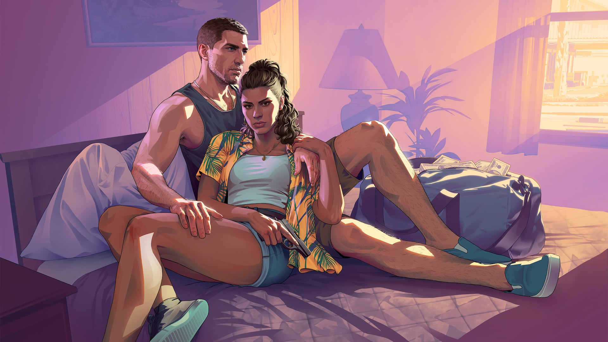

© Rockstar Games / Take-Two Interactive
L'histoire sera racontée en chapitres
EN BREF
- Histoire découpée en chapitres, une première pour la série GTA
- Indice : la description officielle de l'édition Ultimate
- Modèle probable : Red Dead Redemption 2
GTA 6 adoptera une structure narrative divisée en chapitres — une première pour la série Grand Theft Auto. Cette approche a déjà fait ses preuves dans Red Dead Redemption 2.
D'où vient l'information ?
L'indice vient de la description officielle de l'édition Ultimate, qui évoque des bonus exclusifs « répartis tout au long de l'histoire de Jason et Lucia, avec de nouvelles récompenses débloquées à chaque chapitre ».
Le précédent Red Dead Redemption 2
Dans RDR2, l'histoire d'Arthur Morgan est découpée en six chapitres et un épilogue en deux parties. Chaque chapitre installe la bande dans une nouvelle région, avec de nouveaux personnages et activités — et le monde évolue d'un chapitre à l'autre.
GTA 6 pourrait suivre la même logique : faire évoluer Vice City et Leonida au fil de l'histoire, débloquer progressivement des régions ou raconter des événements séparés dans le temps. Le fonctionnement exact des chapitres n'a toutefois pas encore été détaillé par Rockstar.